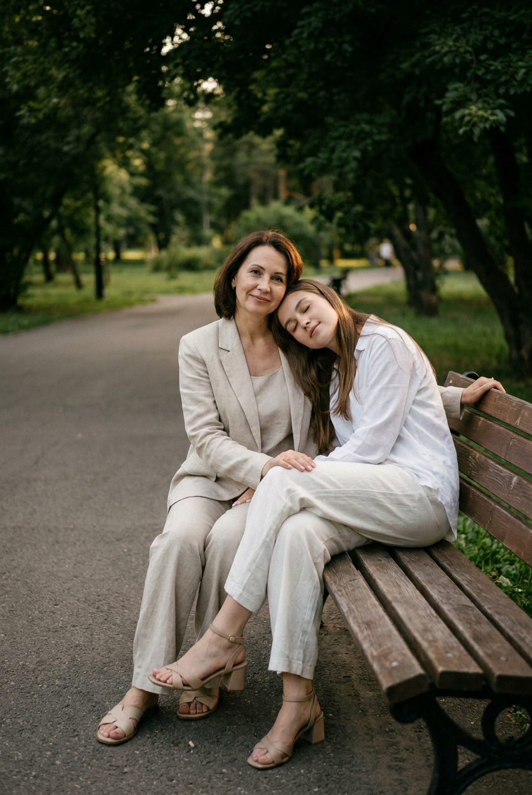
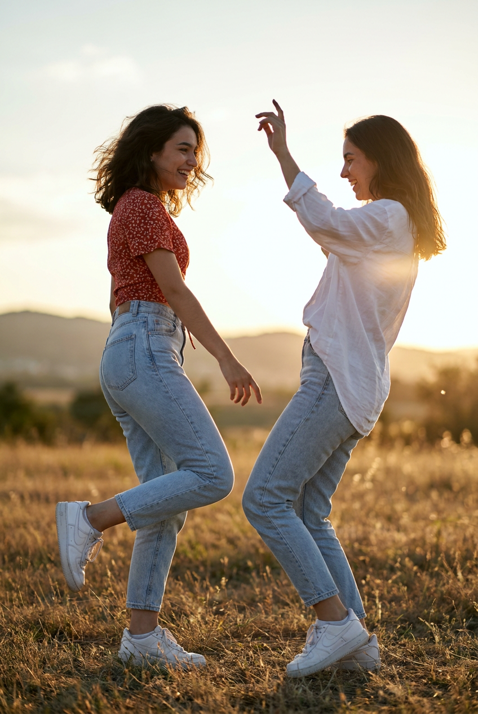
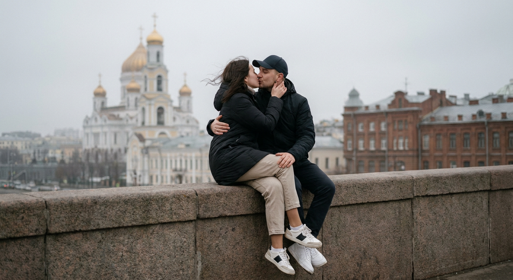
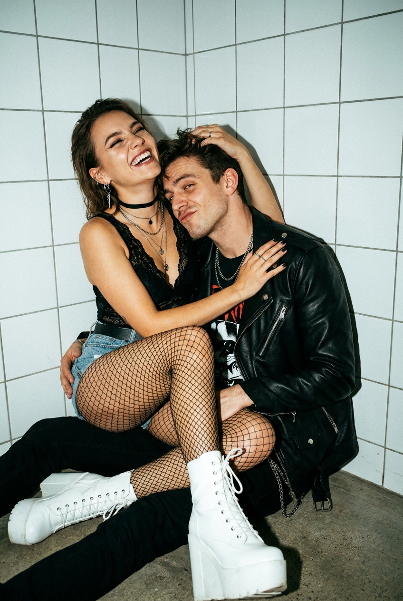
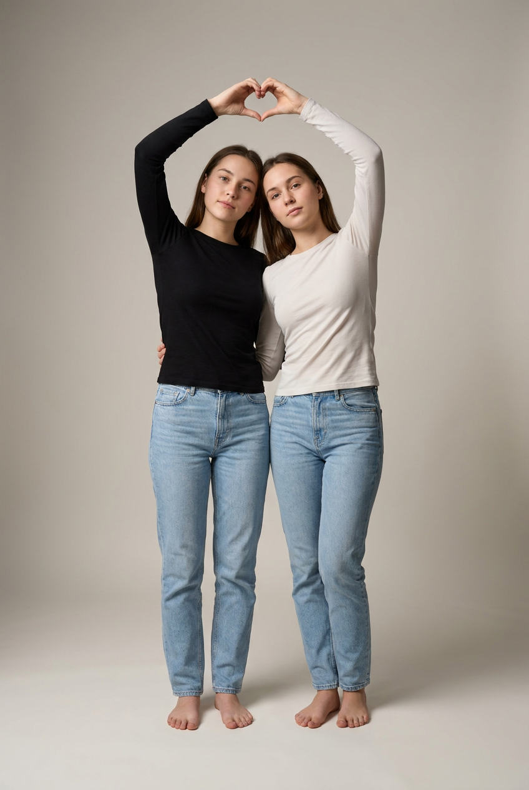
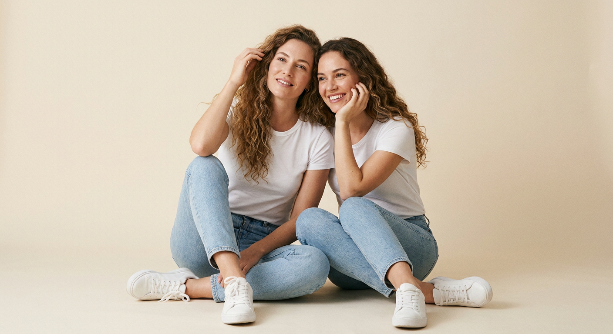
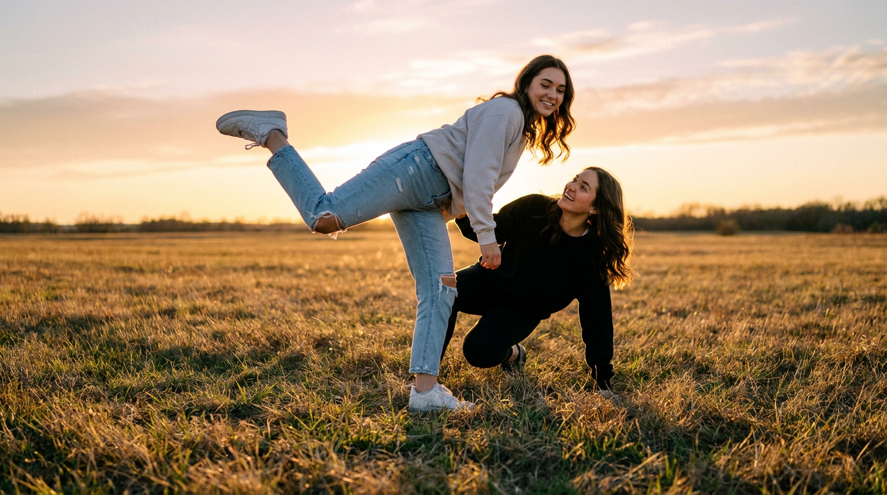
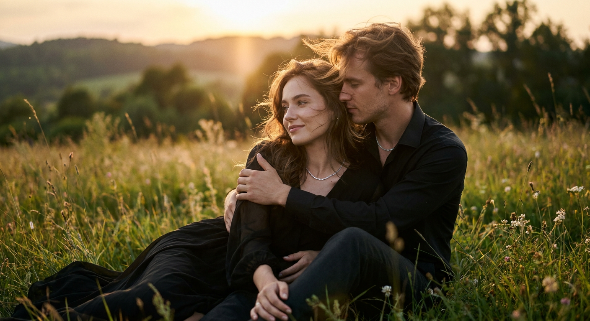
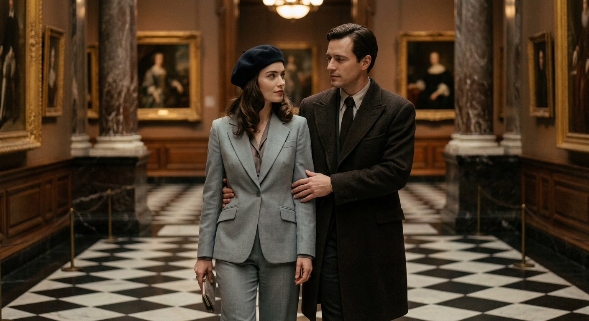
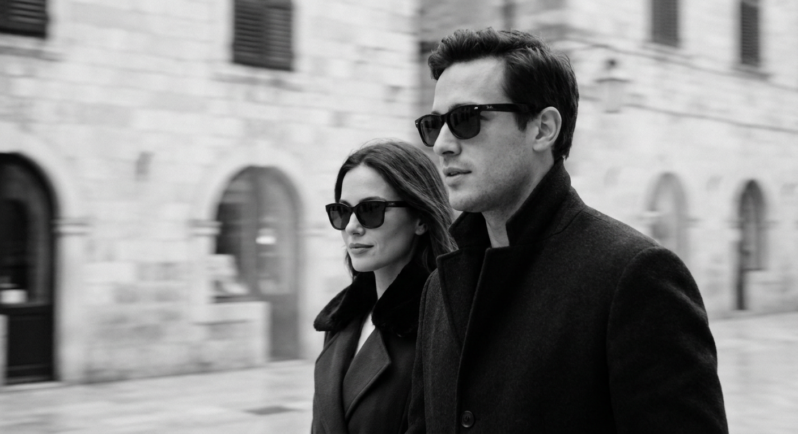

Совместные ИИ-фото: 10 промптов для нейросети

Совместный снимок часто не получается даже при хорошей камере: кто-то моргнул, поза выглядит скованно, а нужного настроения в кадре нет. Генерация помогает собрать сцену заново — с нужным светом, локацией и естественным взаимодействием людей.
В подборке — 10 промптов для фотографий с близкими: мамой и дочерью, сёстрами, подругами и романтическим партнёром. Здесь есть уютный парк, поле на закате, городская улица, музейный интерьер и студийные портреты.
Как сгенерировать такое фото: пошагово
Нужен снимок анфас при ровном свете, лицо в кадре целиком, без тёмных очков и головных уборов. Разрешение от 1000 пикселей по короткой стороне. Чем чётче исходник, тем точнее модель повторит черты.
Выберите сценарий ниже и нажмите «Копировать» — текст уйдёт в буфер целиком, вместе с командой сохранения внешности. Эта команда стоит первой строкой и отвечает за то, чтобы на выходе было ваше лицо, а не случайное.
Кнопка «Сгенерировать» рядом с каждым промптом открывает модель в новой вкладке. Nano Banana Pro работает с референсом лица — в отличие от моделей, которые генерируют портрет с нуля и узнаваемость теряют.
Промпт — в поле ввода, портрет — через загрузку референса. Порядок значения не имеет, но без референса команда сохранения внешности работать не будет: модели нечего сохранять.
Для сторис и ленты берите 9:16, для превью и обложек — 4:3. Первый результат редко идеален: если поза или свет ушли не туда, поправьте соответствующую часть промпта и запустите заново. Обычно хватает двух-трёх итераций.
10 промптов для генерации
1. Мама и дочь в парке
Строго сохранить внешность по загруженному референсу: черты лица, пропорции, мимику и текстуру кожи без изменений. Кинематографичная ультрареалистичная фотография мамы и дочери в городском парке. Их лица и индивидуальная внешность соответствуют загруженному референсу: сохранить форму глаз, бровей, носа, губ, овал лица, естественную мимику и пропорции без стилизации. Они сидят на деревянной лавочке у асфальтовой дорожки. Дочь нежно прислоняет голову к маме, одна её рука лежит рядом со спинкой лавки. Мама расслабленно повернута к камере и слегка улыбается. Сцена выглядит как случайно пойманный семейный момент, без театральной постановки. Позади — зелёные насаждения, густая тёмно-зелёная листва и естественная рамка из деревьев сверху. Дальний парк, газон и дорожка мягко размыты, заметна перспектива ограды или тропинки. Мягкий дневной свет, натуральные оттенки кожи, реалистичная глубина резкости, высокая детализация.
2. Танец подруг на закате

Строго сохранить внешность по загруженному референсу: черты лица, пропорции, мимику и текстуру кожи без изменений. Ультрареалистичный вертикальный кадр в полный рост: две подруги танцуют в открытом поле во время тёплого заката. Лица обеих девушек должны точно соответствовать загруженным референсам, включая индивидуальные черты, форму глаз, бровей, носа, губ и овал лица. Они находятся в живом, игривом движении, будто только что рассмеялись и продолжают танцевать. Левая подруга делает выразительный шаг или поворот, её поза динамичная; вторая поддерживает движение рядом, между ними ощущается свободная дружеская близость. Высокая суховатая трава перемежается редкими полевыми цветами. На горизонте видны сильно размытые силуэты деревьев и дальних холмов. Небо окрашено золотым градиентом, свет идёт сбоку и снизу, в воздухе лёгкая дымка. Допустимы небольшие lens flare и мягкое свечение, но без пересветов. Настроение летнее, искреннее и не постановочное.
3. Поцелуй на городской высоте

Строго сохранить внешность по загруженному референсу: черты лица, пропорции, мимику и текстуру кожи без изменений. Ультрареалистичная кинематографичная фотография романтической пары на городской высоте. Их внешность и лица соответствуют загруженным референсам, без изменения индивидуальных черт и пропорций. Пара стоит или слегка присела на каменный парапет и целуется. Головы мягко наклонены друг к другу, руки обнимают партнёра, глаза закрыты либо направлены навстречу во время поцелуя. Эмоция нежная, искренняя, спонтанная, как candid romance. На заднем плане — центр города с величественным православным собором, золотыми куполами и колокольней, рядом кирпичные исторические здания. Вдали заметны мост, арки и архитектурные детали, но главный акцент остаётся на паре. Пасмурное серо-белое небо, рассеянный мягкий свет без жёстких бликов, лёгкая дымка в перспективе. Одежда повседневная и городская, без кричащих деталей. Реалистичная фактура камня, кожи и ткани, естественная глубина резкости.
4. Панк-романтика у стены

Строго сохранить внешность по загруженному референсу: черты лица, пропорции, мимику и текстуру кожи без изменений. Ультрареалистичный вертикальный средний портрет альтернативной пары в дерзкой эстетике club / street punk romance. Лица мужчины и женщины должны совпадать с загруженными референсами, включая характерные черты, пропорции и естественную мимику. Сцена проходит у стены, облицованной белой плиткой. Мужчина сидит или полусидит на полу, корпус немного развёрнут к камере, и наклоняется к женщине с флиртующим, игривым выражением. Женщина находится сверху или сзади на уровне его плеча, громко смеётся, слегка запрокинув голову; глаза прищурены от улыбки. Между ними лёгкий контакт и поддержка, романтика выражена прикосновениями, смехом и уверенной близостью, без пошлости. Одежда и детали образа — неформальные, с уличным панк-настроением. Живой контрастный свет, натуральные тени, фактура плитки, резкие лица и мягко уходящий фон.
5. Сёстры образуют сердце

Строго сохранить внешность по загруженному референсу: черты лица, пропорции, мимику и текстуру кожи без изменений. Студийная ультрареалистичная фотография двух сестёр в полный рост, вертикальная композиция. Их лица точно соответствуют загруженным референсам: сохранить индивидуальные особенности, форму глаз, бровей, носа, губ, овал лица, мимику и пропорции. Сёстры стоят в центре кадра вплотную друг к другу и занимают большую часть высоты изображения. Левая сестра в чёрном или другом тёмном верхе поднимает руки и формирует верхнюю часть большого сердечного жеста над головами; вторая соединяет руки с ней, завершая дугу. Выражения спокойные, естественные, немного задумчивые и мягко игривые, без широкой постановочной улыбки. Фон однотонный, светлый, бежево-серый, с деликатным градиентом. Пол ровный, без текстуры, предметов и посторонних объектов. Мягкий студийный свет, чистые контуры, натуральный цвет кожи, минималистичная композиция и высокая детализация ткани.
6. Подруги на светлом полу

Строго сохранить внешность по загруженному референсу: черты лица, пропорции, мимику и текстуру кожи без изменений. Ультрареалистичная студийная фотография двух подруг, сидящих на полу близко друг к другу. Лица и внешность обеих соответствуют загруженным референсам, без изменения характерных черт, пропорций и естественной мимики. Они улыбаются и слегка наклонены в одну сторону, создавая лёгкий lifestyle-кадр для дружеского альбома. Обе сидят с согнутыми и поджатыми ногами. Левая подруга находится немного ближе к камере, одной рукой касается волос или виска, будто поправляет прядь. Вторая сидит рядом, поддерживая расслабленную позу и открытое взаимодействие. Студия оформлена в светлых бежево-кремовых тонах: однотонный фон без узоров и декора, ровная матовая поверхность пола, никаких посторонних предметов. Фон мягко размывается, внимание сосредоточено на лицах, улыбках и жестах. Рассеянный мягкий свет, натуральные оттенки, отсутствие напряжённых поз.
7. Сёстры в поле на закате

Строго сохранить внешность по загруженному референсу: черты лица, пропорции, мимику и текстуру кожи без изменений. Кинематографичная ультрареалистичная фотография двух сестёр на открытом поле в золотой час. Лица и внешний вид соответствуют загруженным референсам, с сохранением индивидуальных черт, пропорций и естественной мимики. В центре и на переднем плане одна сестра выполняет лёгкий динамичный трюк: стоит боком, уверенно удерживает равновесие и поднимает одну ногу вверх, согнув колено. На лице радость или озорная улыбка. Вторая сестра находится чуть позади и ближе к земле, мягко опирается на руку или колено и наклоняется вперёд, будто включается в игру. Сцена выглядит как живой семейный момент, а не постановочная фотосессия. Тёплый солнечный свет, длинные мягкие тени по траве, небо с переходом от золотого к пастельно-розовому, лёгкие облака на горизонте. Натуральная высокая трава, реалистичная перспектива, мягкое свечение контрового света и высокая детализация движения.
8. Пара в высокой траве

Строго сохранить внешность по загруженному референсу: черты лица, пропорции, мимику и текстуру кожи без изменений. Нежная ультрареалистичная фотография романтической пары, сидящей в высокой траве на закате. Лица и внешний вид обоих должны соответствовать загруженному референсу с сохранением характерных черт, формы глаз, бровей, носа, губ и пропорций. Мужчина обнимает женщину одной рукой — за плечо или за талию — и мягко прижимает её к себе. Женщина повернута немного в профиль, смотрит спокойно и задумчиво, на лице естественная полуулыбка. Её волосы красиво растрёпаны ветром, волосы мужчины уложены естественно. Вокруг — полевая трава и редкие цветы, позади размытые зелёные холмы и силуэты деревьев. Свет золотого часа идёт сбоку и сзади, создавая мягкую дымку, солнечные лучи и лёгкий flare вокруг контрового света. Камерная атмосфера, спокойная романтика, натуральная цветопередача, реалистичная фактура кожи и травы, малая глубина резкости.
9. Диалог в музейном интерьере

Строго сохранить внешность по загруженному референсу: черты лица, пропорции, мимику и текстуру кожи без изменений. Ультрареалистичная кинематографичная фотография романтической пары в роскошном историческом интерьере, похожем на музей или художественную галерею. Их лица и внешний вид соответствуют загруженному референсу, индивидуальные особенности и естественные пропорции сохранены. Пара идёт рядом и слегка поворачивается друг к другу, словно продолжает приватный разговор на ходу. Мужчина находится справа или в центре кадра, бережно придерживает женщину рукой на уровне талии или локтя; его выражение спокойное, сосредоточенное, с лёгкой нежностью. Женщина стоит слева, немного позади или рядом, смотрит в его сторону и отвечает мягким вниманием. В интерьере ощущаются высокие потолки, мраморные элементы, позолоченные рамы картин, тёмные деревянные панели и торжественный полумрак. Архитектура не должна перетягивать внимание. Мягкий направленный свет, глубокие тени, благородные тёплые оттенки, естественная пластика шага и детализация материалов.
10. Cool romantic на улице

Строго сохранить внешность по загруженному референсу: черты лица, пропорции, мимику и текстуру кожи без изменений. Ультрареалистичная кинематографичная уличная фотография романтической пары, идущей рядом по городскому кварталу. Лица и внешность обоих соответствуют загруженным референсам, без изменения индивидуальных черт, пропорций и естественной мимики. Они держатся очень близко, но сохраняют спокойную, сдержанную манеру. Мужчина смотрит в сторону, губы расслаблены; женщина идёт чуть позади, смотрит мягко и уверенно, без улыбки или с едва заметной полуулыбкой. Фон напоминает европейский исторический центр: светлые фасады, каменная кладка, окна, арочные элементы или колоннады. Движение передаётся эффектом panning: архитектура и улица размыты горизонтально, создавая ощущение шага и скорости, при этом лица остаются резкими. В воздухе может быть очень лёгкая городская дымка или пыль, без густого тумана. Натуральный дневной свет, реалистичная одежда, выдержанная палитра, чёткие лица и кинематографичная глубина кадра.
Что важно учесть в этом стиле
Совместное ИИ-фото держится не только на лицах. В промпте нужно описать, кто где находится, куда направлен взгляд, как люди соприкасаются и что происходит вокруг. Формулировка «естественная близость» работает слабее, чем конкретное действие: дочь прислоняется к маме, мужчина кладёт руку на плечо, подруги продолжают танцевать после смеха.
Для реалистичного результата задавайте тип света, время суток, положение камеры и глубину резкости. Размывайте дальний план, а лица оставляйте резкими. Если в сцене много движения, отдельно укажите, что именно должно быть смазано, а что — сохранено в фокусе.
Идеи для вариаций
- Перенесите семейный кадр из парка на дачную веранду или к окну с утренним светом.
- Замените поле на пляж, крышу с видом на город или лесную тропу.
- Добавьте сезон: первые жёлтые листья, снег, цветущие яблони или влажный асфальт после дождя.
- Попросите нейросеть снять сцену на 35 мм для заметной перспективы или на 85 мм для мягкого портретного сжатия.
- Сделайте серию из трёх кадров: общий план, портрет по плечи и момент с деталями рук.
Как собрать свой промпт
Начните с состава пары и типа снимка: «две сестры, вертикальный кадр в полный рост» или «романтическая пара, средний портрет». Затем добавьте действие, эмоцию и точку съёмки. После этого опишите локацию, фон, одежду, свет и нужную резкость.
В конце зафиксируйте технические параметры: объектив 50 мм для естественной перспективы, 85 мм f/1.8 для мягкого фона, вертикальное соотношение 4:5 или 2:3, разрешение не ниже 2048 пикселей по длинной стороне. Для референса лучше сделать 3–5 попыток с одной сценой, меняя только позу или свет.
Ошибки, из-за которых кадр не получается
- Слишком общая поза. Фраза «люди рядом» не объясняет генератору, куда направить руки, плечи и взгляд.
- Противоречивый свет. Не смешивайте закатный контровик с жёстким верхним студийным светом, если это не задумано отдельно.
- Перегруженный фон. Архитектура, декор и яркие предметы могут перетянуть внимание с лиц.
- Нет указания на фокус. Для движения уточняйте: фон смазан горизонтально, лица и руки остаются резкими.
- Слишком много изменений внешности. Чем больше новых причёсок, возраста и деталей лица вы добавляете, тем сильнее референс может исказиться.
Частые вопросы
Как сделать такое ИИ-фото бесплатно?
Для первых попыток подойдут Kandinsky и Шедеврум: они позволяют генерировать изображения без оплаты, но точность работы с лицом и загрузкой референса может быть ограниченной. В Krea AI и Arena.ai проще экспериментировать с визуальным стилем и вариантами, однако доступные функции, лимиты и качество работы с референсом меняются. Для узнаваемого совместного портрета проверяйте, поддерживает ли выбранный режим изображение-образец, и закладывайте несколько генераций.
Как сохранить сходство с людьми на исходном фото?
Загрузите чёткий референс без сильных фильтров и подробно опишите, что нельзя менять: форму лица, глаза, брови, нос, губы, причёску и пропорции. Не перегружайте сцену новыми деталями внешности. Если сходство теряется, уменьшите стилизацию и сначала добейтесь правильного лица на простом фоне.
Какой формат выбрать для совместного снимка?
Для двух людей в полный рост обычно подходят вертикальные пропорции 2:3 или 4:5. Квадрат удобен для аватара и публикации в ленте, а горизонтальный формат лучше раскрывает пейзаж или архитектуру. Соотношение сторон указывайте прямо в промпте и проверяйте, не обрезались ли руки и ноги.
Что делать, если руки и лица искажаются?
Упростите позу, уберите лишние жесты и не просите одновременно сложное движение, поцелуй и активный фон. Генерируйте сцену с меньшим числом деталей, затем меняйте только проблемный фрагмент через редактирование или маску. Полезно также явно указать пять пальцев, естественное положение кистей и резкие лица без размытия.